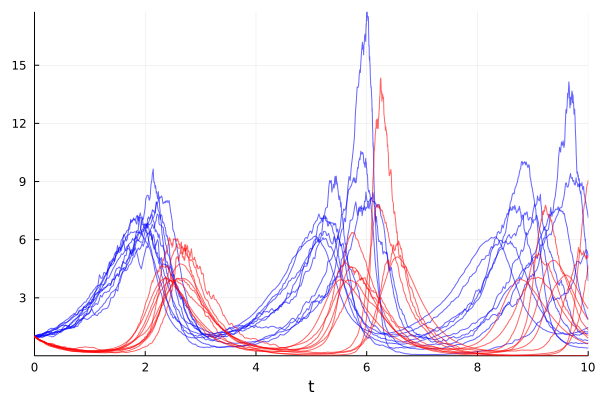

Parallel Ensemble Simulations
Contents
3. Parallel Ensemble Simulations#
Docs: https://diffeq.sciml.ai/stable/features/ensemble/
3.1. Solving an ODE With Different Initial Conditions#
Solving \(\dot{u} = 1.01u\) with \(u(0)=0.5\) and \(t \in [0, 1]\)
using DifferentialEquations
using Plots
# Linear ODE which starts at 0.5 and solves from t=0.0 to t=1.0
prob = ODEProblem((u,p,t)->1.01u, 0.5, (0.0, 1.0))
ODEProblem with uType Float64 and tType Float64. In-place: false
timespan: (0.0, 1.0)
u0: 0.5
# Define a new problem for each trajectory
# Change the initial condition (u0) in this example
function prob_func(prob, i, repeat)
remake(prob, u0=rand() * prob.u0)
end
prob_func (generic function with 1 method)
You could also obtain the necessary data from outside of the prob_func()
initial_conditions = range(0, stop=1, length=100)
function prob_func(prob, i, repeat)
remake(prob, u0=initial_conditions[i])
end
ensemble_prob = EnsembleProblem(prob; prob_func=prob_func)
# Ensemble simulations use multithreading by default
sim = solve(ensemble_prob, trajectories=100)
EnsembleSolution Solution of length 100 with uType:
OrdinaryDiffEq.ODECompositeSolution{Float64, 1, Vector{Float64}, Nothing, Nothing, Vector{Float64}, Vector{Vector{Float64}}, ODEProblem{Float64, Tuple{Float64, Float64}, false, SciMLBase.NullParameters, ODEFunction{false, var"#1#2", LinearAlgebra.UniformScaling{Bool}, Nothing, Nothing, Nothing, Nothing, Nothing, Nothing, Nothing, Nothing, Nothing, Nothing, Nothing, Nothing, typeof(SciMLBase.DEFAULT_OBSERVED), Nothing}, Base.Pairs{Symbol, Union{}, Tuple{}, NamedTuple{(), Tuple{}}}, SciMLBase.StandardODEProblem}, CompositeAlgorithm{Tuple{Tsit5{typeof(OrdinaryDiffEq.trivial_limiter!), typeof(OrdinaryDiffEq.trivial_limiter!), Static.False}, Rosenbrock23{0, false, Nothing, typeof(OrdinaryDiffEq.DEFAULT_PRECS), Val{:forward}, true, nothing}}, OrdinaryDiffEq.AutoSwitchCache{Tsit5{typeof(OrdinaryDiffEq.trivial_limiter!), typeof(OrdinaryDiffEq.trivial_limiter!), Static.False}, Rosenbrock23{0, false, Nothing, typeof(OrdinaryDiffEq.DEFAULT_PRECS), Val{:forward}, true, nothing}, Rational{Int64}, Int64}}, OrdinaryDiffEq.CompositeInterpolationData{ODEFunction{false, var"#1#2", LinearAlgebra.UniformScaling{Bool}, Nothing, Nothing, Nothing, Nothing, Nothing, Nothing, Nothing, Nothing, Nothing, Nothing, Nothing, Nothing, typeof(SciMLBase.DEFAULT_OBSERVED), Nothing}, Vector{Float64}, Vector{Float64}, Vector{Vector{Float64}}, OrdinaryDiffEq.CompositeCache{Tuple{OrdinaryDiffEq.Tsit5ConstantCache{Float64, Float64}, OrdinaryDiffEq.Rosenbrock23ConstantCache{Float64, SciMLBase.TimeDerivativeWrapper{ODEFunction{false, var"#1#2", LinearAlgebra.UniformScaling{Bool}, Nothing, Nothing, Nothing, Nothing, Nothing, Nothing, Nothing, Nothing, Nothing, Nothing, Nothing, Nothing, typeof(SciMLBase.DEFAULT_OBSERVED), Nothing}, Float64, SciMLBase.NullParameters}, SciMLBase.UDerivativeWrapper{ODEFunction{false, var"#1#2", LinearAlgebra.UniformScaling{Bool}, Nothing, Nothing, Nothing, Nothing, Nothing, Nothing, Nothing, Nothing, Nothing, Nothing, Nothing, Nothing, typeof(SciMLBase.DEFAULT_OBSERVED), Nothing}, Float64, SciMLBase.NullParameters}, Float64, OrdinaryDiffEq.StaticWOperator{true, Float64}, Nothing}}, OrdinaryDiffEq.AutoSwitchCache{Tsit5{typeof(OrdinaryDiffEq.trivial_limiter!), typeof(OrdinaryDiffEq.trivial_limiter!), Static.False}, Rosenbrock23{0, false, Nothing, typeof(OrdinaryDiffEq.DEFAULT_PRECS), Val{:forward}, true, nothing}, Rational{Int64}, Int64}}}, DiffEqBase.DEStats}
# Each element of sim is an ODE solution
sim[1]
retcode: Success
Interpolation: specialized 4th order "free" interpolation, specialized 2nd order "free" stiffness-aware interpolation
t: 5-element Vector{Float64}:
0.0
0.09997344853761148
0.3468116099692158
0.6797117004343542
1.0
u: 5-element Vector{Float64}:
0.05334339995777321
0.05901097484965557
0.07571906533828672
0.10598091670580997
0.14645968602282203
plot(sim, linealpha=0.4)
3.2. Solving an SDE with Different Parameters#
function lotka_volterra!(du, u, p, t)
du[1] = p[1] * u[1] - p[2] * u[1] * u[2]
du[2] = -3 * u[2] + u[1] * u[2]
end
function g!(du, u, p, t)
du[1] = p[3] * u[1]
du[2] = p[4] * u[2]
end
g! (generic function with 1 method)
p = [1.5, 1.0, 0.1, 0.1]
prob = SDEProblem(lotka_volterra!, g!, [1.0, 1.0], (0.0, 10.0), p)
SDEProblem with uType Vector{Float64} and tType Float64. In-place: true
timespan: (0.0, 10.0)
u0: 2-element Vector{Float64}:
1.0
1.0
function prob_func(prob, i, repeat)
x = 0.3 * rand(2)
remake(prob, p=[p[1:2];x])
end
prob_func (generic function with 1 method)
ensemble_prob = EnsembleProblem(prob, prob_func=prob_func)
sim = solve(ensemble_prob, SRIW1(), trajectories=10)
EnsembleSolution Solution of length 10 with uType:
RODESolution{Float64, 2, Vector{Vector{Float64}}, Nothing, Nothing, Vector{Float64}, NoiseProcess{Float64, 2, Float64, Vector{Float64}, Vector{Float64}, Vector{Vector{Float64}}, typeof(DiffEqNoiseProcess.INPLACE_WHITE_NOISE_DIST), typeof(DiffEqNoiseProcess.INPLACE_WHITE_NOISE_BRIDGE), true, ResettableStacks.ResettableStack{Tuple{Float64, Vector{Float64}, Vector{Float64}}, true}, ResettableStacks.ResettableStack{Tuple{Float64, Vector{Float64}, Vector{Float64}}, true}, RSWM{Float64}, Nothing, RandomNumbers.Xorshifts.Xoroshiro128Plus}, SDEProblem{Vector{Float64}, Tuple{Float64, Float64}, true, Vector{Float64}, Nothing, SDEFunction{true, typeof(lotka_volterra!), typeof(g!), LinearAlgebra.UniformScaling{Bool}, Nothing, Nothing, Nothing, Nothing, Nothing, Nothing, Nothing, Nothing, Nothing, Nothing, Nothing, Nothing, typeof(SciMLBase.DEFAULT_OBSERVED), Nothing}, typeof(g!), Base.Pairs{Symbol, Union{}, Tuple{}, NamedTuple{(), Tuple{}}}, Nothing}, SRIW1, StochasticDiffEq.LinearInterpolationData{Vector{Vector{Float64}}, Vector{Float64}}, DiffEqBase.DEStats}
plot(sim, linealpha=0.6, color=:blue, vars=(0,1))
plot!(sim, linealpha=0.6, color=:red, vars=(0,2))

summ = EnsembleSummary(sim, 0:0.1:10)
plot(summ, fillalpha=0.5)